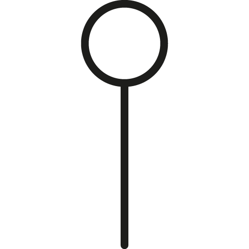

les pièces destroy
Au cours des années 50, ces vêtements ont connu une envergure internationale en tant que signes de rébellion pour exprimer des idées contestataires de l’ordre social.



le mouvenemnt punk et le destroy
Contester l’ordre politique et social a été l’objectif principal des créateurs des pièces destroys. De nos jours, ces vêtements connaissent une nouvelle envergure : des pièces fortes qui habilleront nos tenues avec leurs coupes délavées, slim et zippées aux chevilles.
Les pièces destroys conviennent parfaitement au goût vestimentaire de cette nouvelle génération. Les déchirures et trous se font manuellement.